Accessibility
Lecture 17
Duke University
STA 113 - Fall 2023
Warm-up
Announcements
- …
Setup
Do you remember?
Flatten the curve
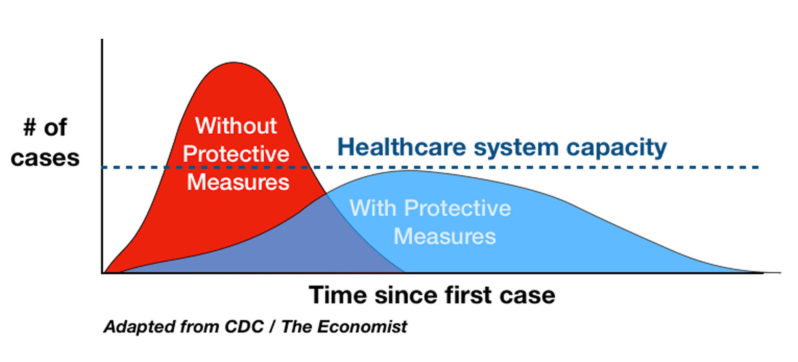
Exponential spread
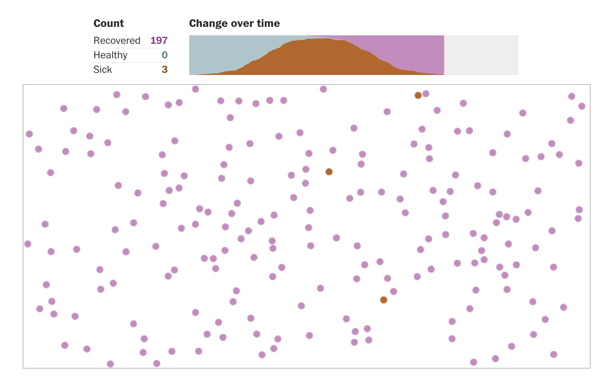
JHU COVID-19 Dashboard
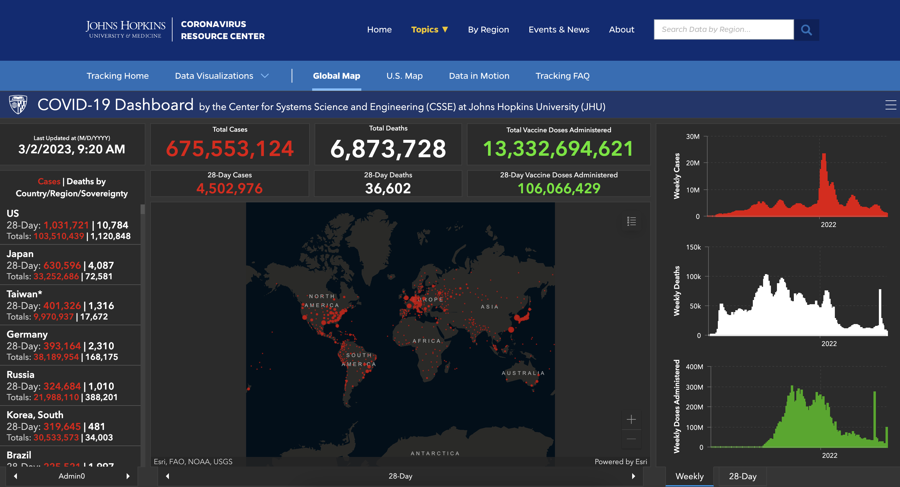
Think back
What do they all have in common?
Accessible COVID-19 statistics tracker
Accessibility and screen readers
Alternative text
It is read by screen readers in place of images allowing the content and function of the image to be accessible to those with visual or certain cognitive disabilities.
It is displayed in place of the image in browsers if the image file is not loaded or when the user has chosen not to view images.
It provides a semantic meaning and description to images which can be read by search engines or be used to later determine the content of the image from page context alone.
Alt and surrounding text
"CHART TYPE of TYPE OF DATA where REASON FOR INCLUDING CHART`
+ Link to data source somewhere in the textCHART TYPE: It’s helpful for people with partial sight to know what chart type it is and gives context for understanding the rest of the visual.
TYPE OF DATA: What data is included in the chart? The x and y axis labels may help you figure this out.
REASON FOR INCLUDING CHART: Think about why you’re including this visual. What does it show that’s meaningful. There should be a point to every visual and you should tell people what to look for.
Link to data source: Don’t include this in your alt text, but it should be included somewhere in the surrounding text.
Data
- Registered nurses by state and year
- Number of nurses, salaries, employment
- Source: TidyTuesday
[1] "state"
[2] "year"
[3] "total_employed_rn"
[4] "employed_standard_error_percent"
[5] "hourly_wage_avg"
[6] "hourly_wage_median"
[7] "annual_salary_avg"
[8] "annual_salary_median"
[9] "wage_salary_standard_error_percent"
[10] "hourly_10th_percentile"
[11] "hourly_25th_percentile"
[12] "hourly_75th_percentile"
[13] "hourly_90th_percentile"
[14] "annual_10th_percentile"
[15] "annual_25th_percentile"
[16] "annual_75th_percentile"
[17] "annual_90th_percentile"
[18] "location_quotient"
[19] "total_employed_national_aggregate"
[20] "total_employed_healthcare_national_aggregate"
[21] "total_employed_healthcare_state_aggregate"
[22] "yearly_total_employed_state_aggregate" Alt text for bar charts
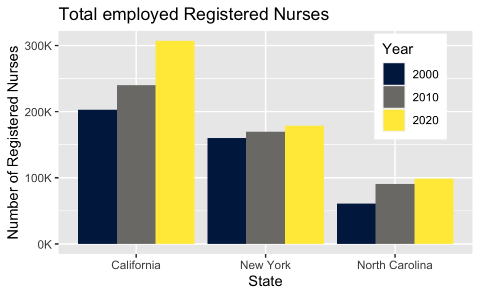
- Provide title and axis labels
- Briefly describe the chart and give a summary of any trends it displays
- Convert bar charts to accessible tables or lists
- Avoid describing visual attributes of the bars (e.g., dark blue, gray, yellow) unless there’s an explicit need to do so
Developing the alt text
- Total employed registered nurses in three states over time.
- Total employed registered nurses in California, New York, and North Carolina, in 2000, 2010, and 2020.
- A bar chart of total employed registered nurses in California, New York, and North Carolina, in 2000, 2010, and 2020, showing increasing numbers of nurses over time.
- The figure is a bar chart titled “Total employed Registered Nurses” that displays the numbers of registered nurses in three states (California, New York, and North Carolina) over a 20 year period, with data recorded in three time points (2000, 2010, and 2020). In each state, the numbers of registered nurses increase over time. The following numbers are all approximate. California started off with 200K registered nurses in 2000, 240K in 2010, and 300K in 2020. New York had 150K in 2000, 160K in 2010, and 170K in 2020. Finally North Carolina had 60K in 2000, 90K in 2010, and 100K in 2020.
Alt text for line graphs
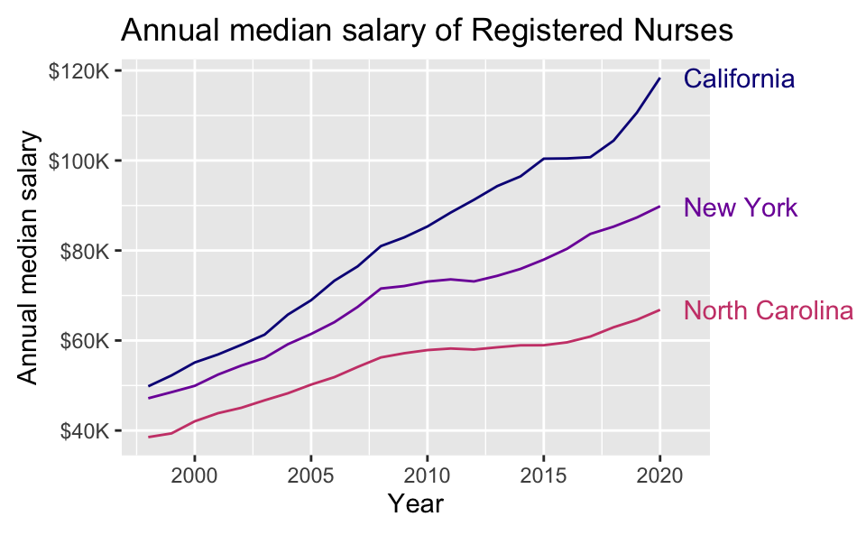
Write alt text for the line graph above.
- Provide title and axis labels
- Briefly describe the graph and give a summary of any trends it displays
- Convert data represented in lines to accessible tables or lists where feasible
- Avoid describing visual attributes of the lines (e.g., purple, pink) unless there’s an explicit need to do so
Alt text for scatter plots
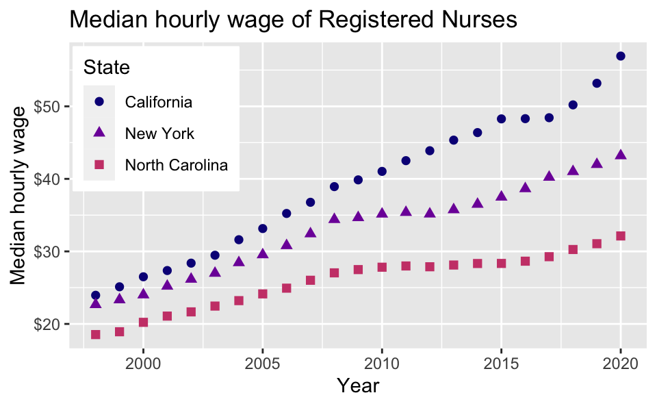
Write alt text for the scatter plot above.
Scatter plots are among the more difficult graphs to describe, especially if there is a need to make specific data point accessible.
- Identify the image as a scatter plot
- Provide the title and axis labels
- Focus on the overall trend
- If it’s necessary to be more specific, convert the data into an accessible table
Recommended reading
Accessible Visualization via Natural Language Descriptions: A Four-Level Model of Semantic Content
Alan Lundgard, MIT CSAIL
Arvind Satyanarayan, MIT CSAIL
IEEE Transactions on Visualization & Computer Graphics (Proceedings of IEEE VIS), 2021
To demonstrate how our model can be applied to evaluate the effectiveness of visualization descriptions, we conduct a mixed-methods evaluation with 30 blind and 90 sighted readers, and find that these reader groups differ significantly on which semantic content they rank as most useful. Together, our model and findings suggest that access to meaningful information is strongly reader-specific, and that research in automatic visualization captioning should orient toward descriptions that more richly communicate overall trends and statistics, sensitive to reader preferences.
Accessibility and colors
Color scales
Use colorblind friendly color scales (e.g., Okabe Ito, viridis)
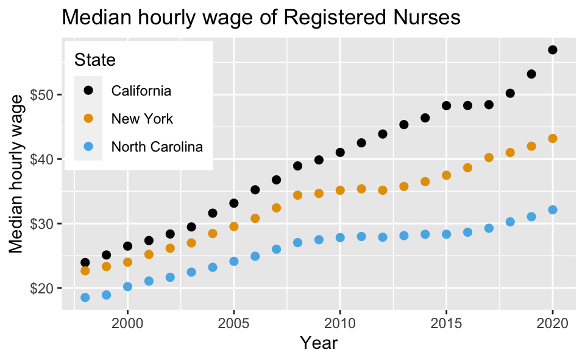
nurses_subset |>
ggplot(aes(x = year, y = hourly_wage_median, color = state)) +
geom_point(size = 2) +
ggthemes::scale_color_colorblind() +
scale_y_continuous(labels = label_dollar()) +
labs(
x = "Year", y = "Median hourly wage", color = "State",
title = "Median hourly wage of Registered Nurses"
) +
theme(
legend.position = c(0.15, 0.75),
legend.background = element_rect(fill = "white", color = "white")
)The default ggplot2 color scale + deuteranopia
Deuteranopia: A type of red-green confusion
Default ggplot2 scale
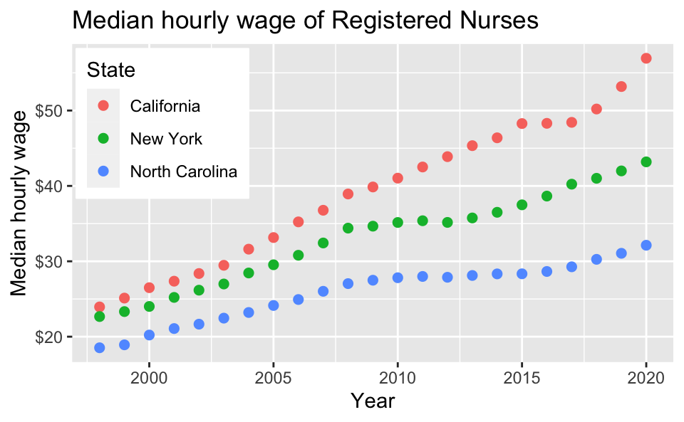
Default ggplot2 scale with deuteranopia
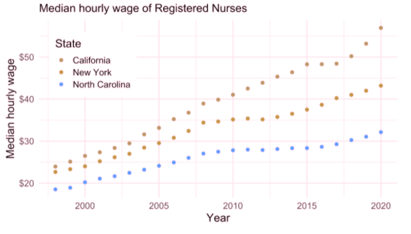
The default ggplot2 color scale + tritanopia
Tritanopia: A type of yellow-blue confusion
Default ggplot2 scale

Default ggplot2 scale with tritanopia
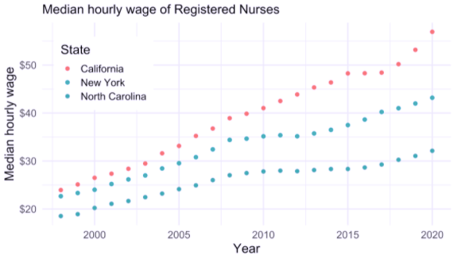
Testing for colorblind friendliness
Color contrast I
Background and foreground text should have sufficient contrast to be distinguishable by users with different vision
Web app for checking color contrast checking: Colour Contrast Analyser
Color contrast II
A WIP R package for checking for color contrast: coloratio
Double encoding
Use shape and color where possible
Default ggplot2 scale
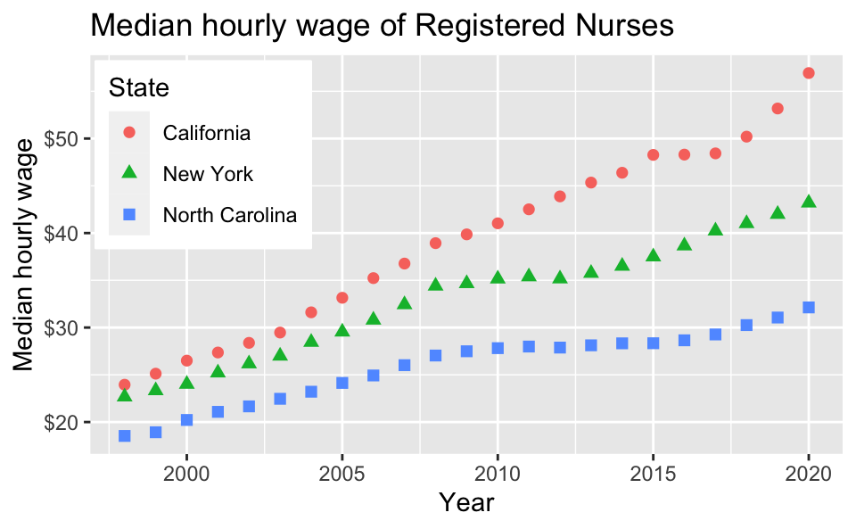
Default ggplot2 scale with deuteranopia
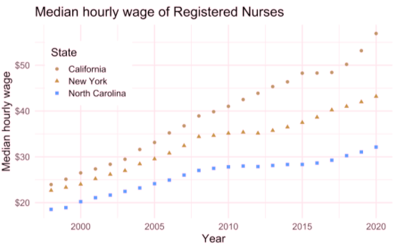
Use direct labeling
Prefer direct labeling where color is used to display information over a legend
Quicker to read
Ensures graph can be understood without reliance on color
Without direct labeling
Default ggplot2 scale
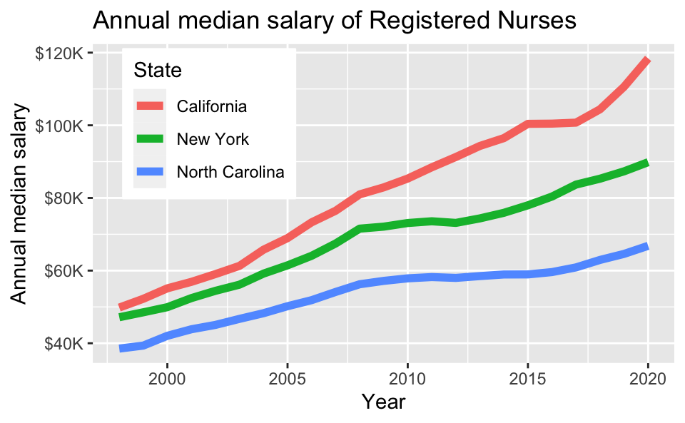
Default ggplot2 scale with deuteranopia
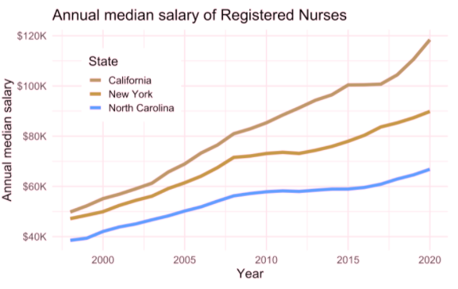
With direct labeling
Default ggplot2 scale

Default ggplot2 scale with deuteranopia
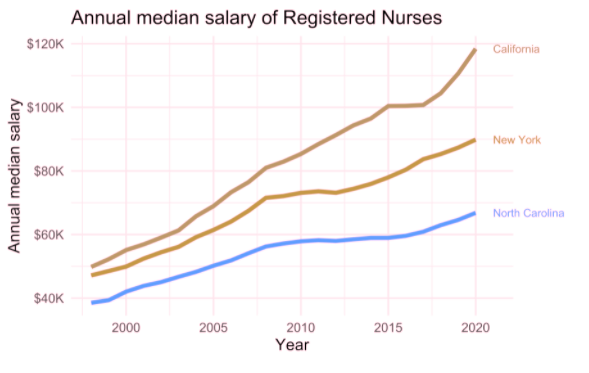
Use whitespace or pattern to separate elements
Separate elements with whitespace or pattern
Allows for distinguishing between data without entirely relying on contrast between colors
Without whitespace
Default ggplot2 scale
Default ggplot2 scale with tritanopia
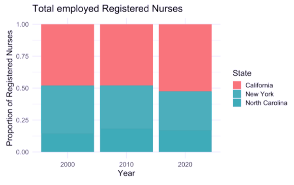
With whitespace
Default ggplot2 scale
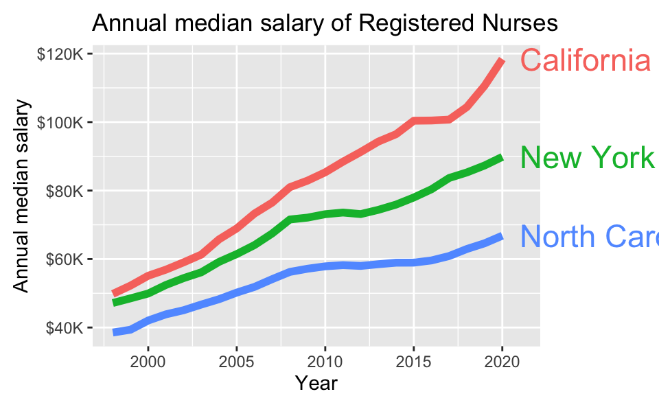
Default ggplot2 scale with tritanopia
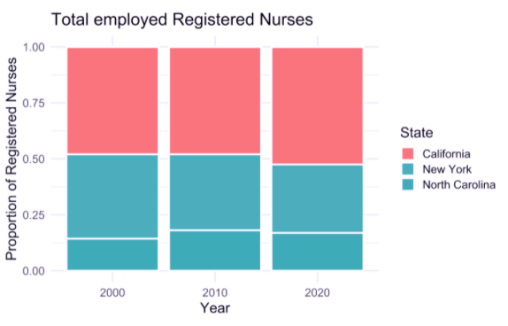
Find a colorblind friendly color palette other than viridis and those in the colorblindr package. This could be an R package that offers a colorblind friendly color palette or it could be just a palette you find online. Apply it to the scatterplot you previously wrote alt text for.
Accessibility and fonts
Accessibility and fonts
- Use a font that has been tested for accessibility (e.g., Atkinson Hyperlegible)
- Keep plot labels and annotations similarly sized as the rest of your text (e.g.,
ggplot2::theme_set(ggplot2::theme_minimal(base_size = 16)))
Demo: Using custom fonts in ggplots!
Keep in mind
When you design for accessibility, you benefit everyone
Other approaches to accessibility
Data sonification
Data sonification is the presentation of data as sound, i.e., auditory equivalent of data visualization.
Data physicalization / haptics
Data physicalization is the presentation of data as objects you can touch, i.e., sensory equivalent of data visualization.
Examples: https://datajournalism.com/read/longreads/lets-get-physical-how-to-represent-data-through-touch
Acknowledgements
COVID visualization examples:
- The New York Times. Flattening the Coronavirus Curve
- The Washington Post. Why outbreaks like coronavirus spread exponentially, and how to “flatten the curve”
- COVID-19 Dashboard by the Center for Systems Science and Engineering (CSSE) at Johns Hopkins University (JHU)
- T. Littlefield (2020) COVID-19 Statistics Tracker
Lundgard, Alan, and Arvind Satyanarayan. “Accessible Visualization via Natural Language Descriptions: A Four-Level Model of Semantic Content.” IEEE transactions on visualization and computer graphics (2021).
Silvia Canelón and Liz Hare. Revealing Room for Improvement in Accessibility within a Social Media Data Visualization Learning Community